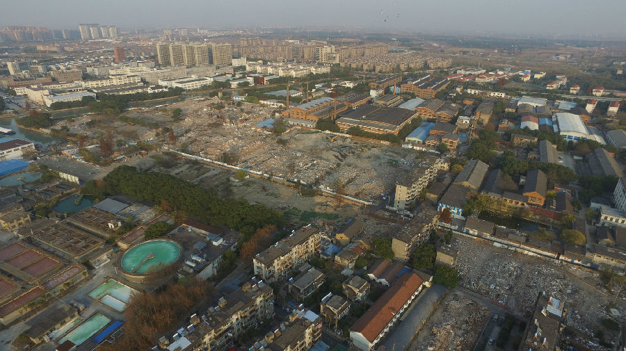

嘉兴市文物保护网 · 市级文物保护点 · 2022-05-16 · 原文

东塔寺遗址位于嘉兴市南湖区南湖街道甪里街民丰新村东塔路，面积3万余平方米。据文献记载该地块原为西汉朱买臣故宅，梁天监二年（503）建寺，隋仁寿辛酉（601）造东塔，经历代修葺，规模宏伟。20世纪60年代，拆除东塔寺旧址建造职工宿舍时，地宫出土28件（组）文物。2019～2020年，市文物部门对遗址进行了考古勘探，确定了东塔塔基位置，探明文化层至少由六朝延续至今，不排除存在更早文化堆积。该遗址地下保存有古代寺塔建筑基址，保存完好，历史久远，规模较大，具有很高的历史价值。2021年被公布为嘉兴市文物保护点。